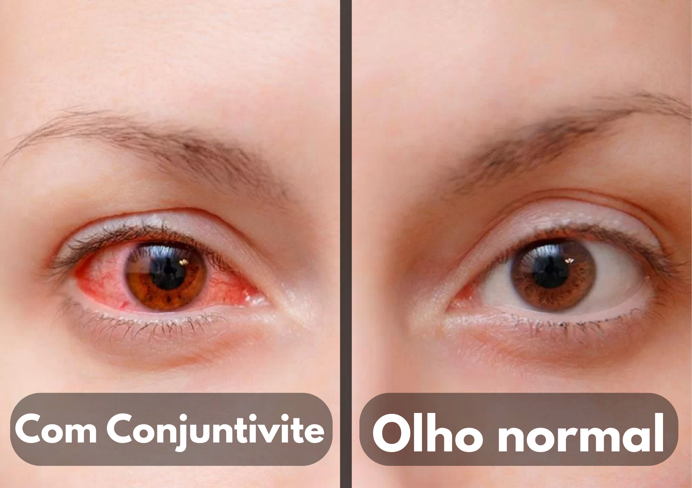
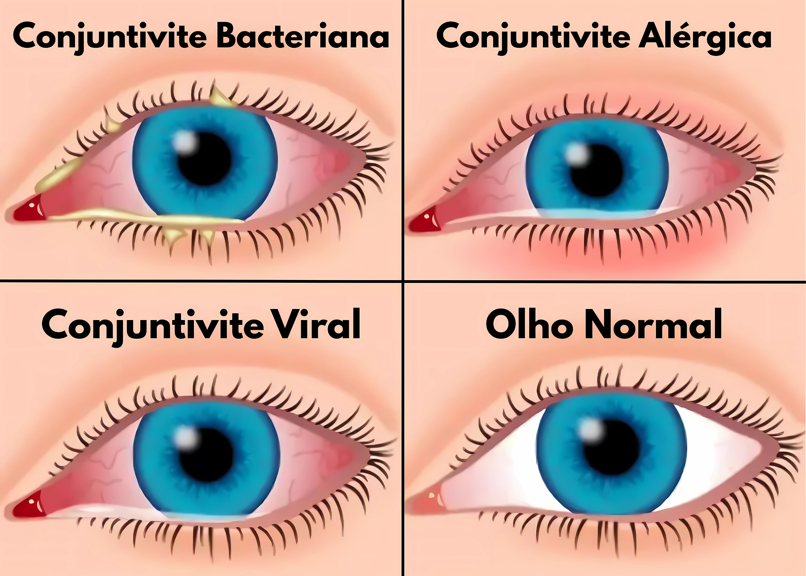

Conjuntivite
O que é conjuntivite?
A conjuntivite se caracteriza por uma inflamação ou irritação da conjuntiva, a membrana fina e transparente que reveste a parte branca do olho. As causas da conjuntivite podem incluir alergias, como aquelas provocadas pela fumaça, maquiagem ou cloro de piscina, além de infecções bacterianas ou virais. Embora seja bastante incômoda e contagiosa, na maioria das vezes, a conjuntivite é fácil de se tratar e raramente resulta sequelas.
Sintomas
Os sintomas da conjuntivite podem variar de acordo com a causa da inflamação (viral, bacteriana, alérgica) e a gravidade do quadro. Alguns dos sintomas comuns da conjuntivite incluem:
- Olhos vermelhos: O principal sintoma de conjuntivite;
- Coceira: Um sintoma frequente, especialmente na conjuntivite alérgica;
- Sensação de corpo estranho: Muitas pessoas com conjuntivite descrevem uma sensação de “areia nos olhos”;
- Lacrimejamento: Podem sair muitas lágrimas dos olhos, como uma resposta ao desconforto e à irritação;
- Inchaço das pálpebras: Elas podem ficar com a sensação de peso.
Quais os tipos mais comuns de conjuntivite?
Os tipos mais comuns de conjuntivite são:
1. Conjuntivite Bacteriana
A Conjuntivite bacteriana difere da conjuntivite viral, pois a secreção é geralmente mais densa, volumosa e amarelada e até gruda os olhos ao despertar. As bactérias envolvidas são o Staphylococcus aureus e o Streptococcus pneumoniae.
O contágio se dá maioritariamente pelo contato, ao encostar as mãos em superfícies infectadas e em seguida transporte aos olhos.
O tratamento também é realizado normalmente por antibióticos na forma de colírios ou pomadas, receitados por um especialista em olhos, que combatem a infecção rapidamente.
2. Conjuntivite Viral
A conjunctivite viral geralmente é causada pelo adenovírus, o mesmo agente causador de doenças respiratórias tais como os resfriados, bronquites e pneumonia. Ao infectar os olhos, o vírus causa inflamação na conjuntiva, causando vermelhidão, etc.
São frequentes a secreção esbranquiçada, a dor de garganta, a febre e os sintomas gripálicos. A transmissão é fácil por contato direto de secreções oculares ou objetos onde ela está presente, tais como travesseiros e toalhas. Embora altamente contagiosa, não há provas de que o vírus se transmite no ar.
3. Conjuntivite Alérgica
A conjuntivite alérgica, se dá em função de uma reação do organismo frente a produtos que promovem a alergia, como a poeira, os ácaros, pelos de animais, pó
Ela provoca coceira intensa, vermelhidão, inchaço das pálpebras e lacrimejamento, frequentemente associada aos sintomas de outros tipos de alergia, como espirros e coriza. Embora menos grave, é bem incômoda e atinge ao redor de 20% das pessoas. O tratamento consta de evitar o contato associado aos alérgenos e o emprego de antialérgicos de blefarossomo recomendados.

Tratamentos
O tratamento da conjuntivite depende se ela é viral, bacteriana ou alérgica, e da gravidade dos sintomas. As abordagens comuns de tratamento para cada tipo de conjuntivite são:
- Conjuntivite Viral: Geralmente se resolve sem necessidade de tratamento específico em alguns dias ou algumas semanas. O tratamento principal é o alívio dos sintomas, com compressas frias sobre os olhos.
- Conjuntivite Bacteriana: É tratada com colírios ou pomadas antibióticas prescritas pelo médico. É importante seguir as instruções precisas quanto à dosagem e à duração do tratamento;
- Conjuntivite Alérgica: Colírios antialérgicos podem ser prescritos pelo profissional responsável para aliviar a coceira e a vermelhidão. Em casos graves, podem ser prescritos remédios mais fortes.
Prevenção
A prevenção da conjuntivite envolve medidas destinadas a evitar a exposição a agentes infecciosos (vírus e bactérias), alérgenos e irritantes que podem causar a inflamação da conjuntiva. Entre as medidas de prevenção, recomendamos:
- Lavar as mãos: a higienização com frequência, especialmente antes de tocar nos olhos, pode evitar a transferência de germes para essa área;
- Evitar ambientes lotados: principalmente se alguém estiver contaminado, é importante não ficar perto de outras pessoas, para que o vírus não se espalhe;
- Evitar o compartilhamento de objetos pessoais: toalhas, lenços, travesseiros, maquiagem ou óculos compartilhados com outras pessoas podem facilitar a transmissão;
- Higiene das lentes de contato: é necessário seguir rigorosamente as instruções de higiene fornecidas. Isso inclui lavar as mãos antes de manusear as lentes, substituir o estojo regularmente, limpar e desinfetá-las adequadamente e seguir as orientações sobre o tempo de uso.